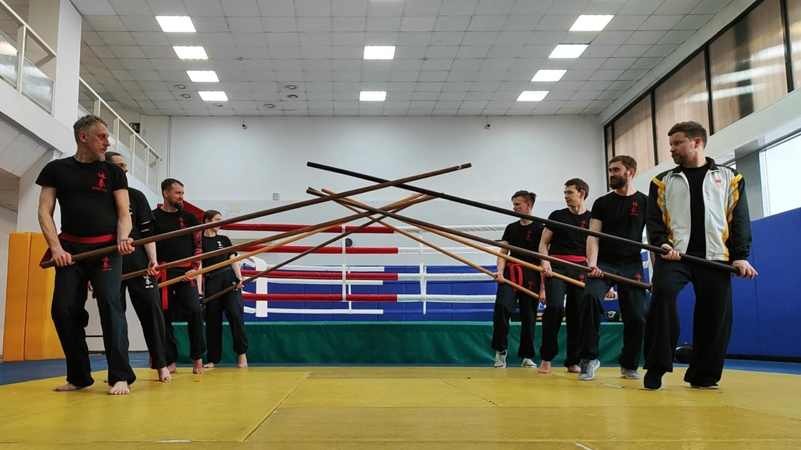

Семинар по применению техник Биу Джи ( 標指 )
22 февраля 2025 в г. Санкт-Петербурге успешно прошел семинар по изучению техник BIU JEE и способам их применения в поединке. В семинаре приняли участие студенты и инструктора из Санкт-Петербурга, Москвы, Гатчины, Всеволожска. Семинар проводил Инструктор Международной Организации Вин Чун Александр Павлов-Русинов.

Корректирующий семинар по техникам и спортивной форме шеста LOK DIM BOON KWUN (六點半棍)
23 февраля 2025 в г. Санкт-Петербурге успешно прошел корректирующий семинар техникам длинного шеста Вин Чун, на семинаре были разобраны и проработаны основные стойки, используемые для работы с шестом, отработана по элементам спортивная форма и отдельное внимание было уделено одиночным и парным упражнениям. В семинаре приняли участие «старшие» студенты IWCO-Санкт-Петербург. Семинар проводил Инструктор Международной Организации Вин Чун Александр Павлов-Русинов.